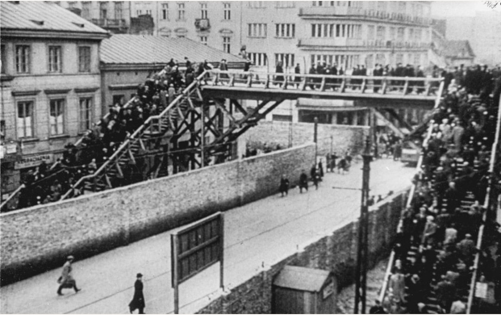
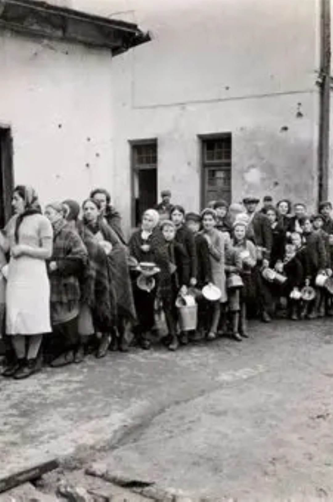

Créé en novembre 1940 par les autorités nazies, le ghetto de Varsovie enferme des centaines de milliers de Juifs dans quelques rues murées, séparées du reste de la ville par des murs et des barbelés. Les civils y vivent dans la promiscuité, la faim, la peur, mais aussi dans une forme de vie quotidienne qui tente de résister à l’anéantissement.

Cette scène montre des civils marchant dans une rue du ghetto, sous les murs et les barbelés. Les brassards, les façades abîmées, les rues étroites témoignent d’une vie enfermée, contrôlée, où chaque déplacement se fait sous le regard de l’occupant.
Dans le ghetto, la population est entassée à un niveau extrême : plusieurs familles par appartement, des logements surpeuplés, des rues saturées. Les rations sont insuffisantes, les maladies se propagent, et des milliers de civils meurent chaque mois de faim et de typhus, avant même les déportations.

Cette file de civils devant un point de distribution illustre la lutte quotidienne pour obtenir un peu de nourriture. Les visages sont graves, les corps fatigués, mais la scène reste une image de vie civile, loin des rafles et des exécutions.
Les civils du ghetto de Varsovie sont au cœur de l’histoire : familles, enfants, vieillards, commerçants, enseignants, médecins. Leur vie enfermée, leur résistance quotidienne et leur disparition progressive font du ghetto l’un des symboles les plus forts de la persécution des civils pendant la Seconde Guerre mondiale.